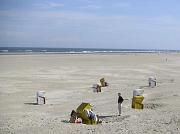
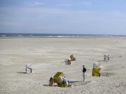

Wir wünschen Ihnen einen angenehmen und erholsamen Aufenthalt im Familienhotel Vallora. Unser erfahrenes und kinderfreundliches Betreuungsteam steht Montag bis Samstag ab 9 Uhr für Sie bereit. Wir bieten jeden Tag ein abwechslungsreiches Programm für Kinder zwischen 8 und 14 Jahren an. Sie finden eine Beschreibung der Aktivitäten an der Rezeption sowie in unserem Betreuungsbereich. Bei Ausflügen müssen die Kinder am Nachmittag vorher angemeldet werden.
Bei gutem Wetter finden unsere Abenteuer- und Spielprogramme im Freien statt. Die Kinder sollten ihre Badebekleidung, Handtücher und Badesandalen mitbringen. An regnerischen Tagen bieten wir Bewegungsspiele und Bastelprojekte in unserer Freizeithalle an. In der Freizeithalle befinden sich eine Kletterwand, drei Trampoline und zahlreiche Spielgeräte (wie zum Beispiel Einräder und Stelzen), die unter Aufsicht benutzt werden dürfen. Tischtennisschläger und -bälle sowie Bälle für Kicker können in der Freizeithalle gegen Pfand ausgeliehen werden.
Eltern können sich in unserem Wellness-Bereich verwöhnen lassen. Besuchen Sie unsere Sauna-Landschaft oder unseren Fitness-Club. Sie können an geplanten Ausflügen teilnehmen oder Ihr eigenes Tagesprogramm gestalten.
09:00 bis 13:00 Uhr Kinderprogramm
13:00 bis 14:30 Uhr Mittagessen
14:30 bis 17:30 Uhr Kinderprogramm
18:00 bis 19:30 Uhr Abendessen
19:30 bis 21:30 Uhr Familienprogramm
Unsere Rezeption ist 24 Stunden besetzt.
Sollten Sie Fragen haben, wenden Sie sich an unser Personal.